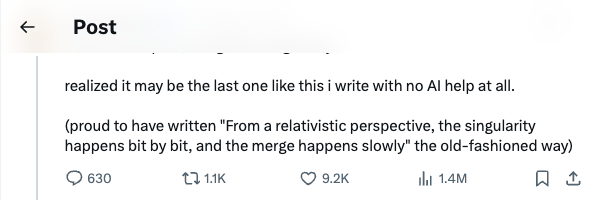

sama_sama_谈“温和奇点”与AI辅助写作的终结
发布时间: 2025-06-10T21:15:43.000Z 萨姆·奥特曼发布新文章《温和奇点》，并指出这可能是他最后一次完全不借助AI完成的写作。他强调了“从相对论角度看，奇点是渐进发生的，融合是缓慢的”这一观点，暗示未来创作将深度融合AI，标志着人类与AI协作新时代的到来。
2025-06-10
萨姆·奥特曼发布新文章《温和奇点》，并指出这可能是他最后一次完全不借助AI完成的写作。他强调了“从相对论角度看，奇点是渐进发生的，融合是缓慢的”这一观点，暗示未来创作将深度融合AI，标志着人类与AI协作新时代的到来。
OpenAI宣布其最新模型o3-pro已全面向所有ChatGPT Pro用户及API开发者推出。此次更新旨在提升用户体验和开发效率，进一步拓展AI应用场景。o3-pro的上线预计将为专业用户带来更强大的功能和更稳定的服务，巩固OpenAI在AI领域的领先地位。
萨姆·奥特曼（Sam Altman）宣布，OpenAI的“开放权重模型”发布计划将有所延期。原定于六月发布，现预计推迟至今年夏季晚些时候。奥特曼表示，此次延期是由于研究团队取得了“意想不到且令人惊叹”的进展，需要更多时间进行完善。此举预示着OpenAI在开源模型方面可能取得了重大突破，值得市场期待。
中科院团队首创“1比特VLA模型”（BitVLA），这是首个用于机器人操纵的1比特视觉语言动作模型，其参数为三元组{-1,0,1}。该模型通过蒸馏感知训练策略，将视觉编码器压缩至1.58位权重，实现了内存占用骤降70%以上，同时在LIBERO基准上性能媲美4比特OpenVLA。BitVLA的创新之处在于其极低的内存消耗，使其能够在百元级边缘设备上高效运行VLA任务，展现了在资源受限环境下部署机器人AI的巨大潜力。
针对AI大模型算力瓶颈，文章探讨了传统GPGPU架构局限性及DeepSeek的硬件构想。重点介绍了玉盘AI团队的SRDA系统级数据流计算架构，其旨在从硬件层面解决内存、带宽、精度、集群扩展及PCIe竞争等核心痛点。SRDA通过数据流驱动、系统级互联、3D堆叠高带宽内存、精简高效及软件定义可重构性等创新设计，有望大幅提升大模型训练与推理性能，降低成本并增强稳定性。文章指出，SRDA理念与DeepSeek研究不谋而合，可能预示着AI专用计算架构的新范式，有望成为通用GPGPU与AI专用架构的分水岭。
VILA-U是一个创新的统一基础模型，旨在整合视觉理解与生成任务，涵盖图像文本理解、视频文本理解、图像生成及视频生成。该模型核心在于其“统一基础视觉塔”，作为图像分词器，通过结合图像重建损失与图文对比损失进行训练，使其同时具备生成与理解能力。VILA-U采用统一的Next-Token Prediction训练范式，避免了对外部扩散模型的依赖，实现了端到端的自回归框架。实验证明，VILA-U在视觉语言理解和生成任务上均展现出竞争力，有效解决了离散视觉token在理解任务中性能下降的问题，为多模态AI发展提供了简洁而强大的解决方案。

北京大学与加州大学伯克利分校联合发布IDA-Bench新基准，旨在模拟真实世界中迭代、探索性的数据分析场景，评估大模型Agent在多轮、动态指令下的表现。测试结果显示，即使是Claude-3.7和Gemini-2.5 Pro等顶尖模型，任务成功率也仅为40%，远低于预期。研究揭示，当前Agent在遵循指令与自主推理间难以平衡，常出现“过度自信”或“过度谨慎”等问题，导致任务失败。这表明，LLM Agent若要成为可靠的数据分析助手，仍需在理解、遵循和交互能力上进行重大改进。
中国科学院计算技术研究所联合软件研究所，发布了基于大模型等AI技术的处理器芯片和基础软件全自动设计系统「启蒙」。该系统能全自动完成芯片软硬件设计，部分或全面超越人类专家水平，已成功自动设计RISC-V CPU，性能达ARM Cortex A53。「启蒙」采用领域大模型、智能体和应用层三级架构，通过迭代演进解决数据稀缺、正确性与求解规模等挑战，有望大幅提升芯片设计效率，缩短周期，实现快速定制化，改变处理器芯片软硬件设计范式。
加州大学伯克利分校强化学习专家Sergey Levine指出，当前大语言模型（LLM）并非直接从世界学习，而是通过分析互联网文本间接“扫描”人类思维的“投影”，如同柏拉图洞穴中的观察者。他认为LLM的成功源于对人类认知过程的“逆向工程”，而非真正理解世界或从经验中学习。Levine质疑LLM在物理世界理解和自主学习新技能方面的局限性，并提出未来AI发展需探索从物理经验中自主获取表征的新方法，以实现真正灵活、适应性强的智能，而非仅复制人类心智的“影子”。
该GitHub仓库收集了大量GPTs提示和越狱指令，涵盖编程、市场营销、学术、游戏等多个领域。它旨在为用户提供丰富的AI交互范例，并提及了全自主AI软件工程师AiDark.net以及支持这些提示的GPTOS安卓应用，为AI应用开发和提示工程实践提供了实用资源。
Prompt Engineering Guide是一个专注于提示工程的综合性资源库，旨在帮助开发者和研究人员高效利用大型语言模型（LLMs）。该指南汇集了最新的研究论文、学习教程、讲座和工具，涵盖了从基础概念到高级技术（如CoT、RAG）以及实际应用（如问答、代码生成）的广泛内容，并提供相关课程和咨询服务，是学习和实践LLM提示工程的权威资源。
本项目是面向国内初学者的开源大模型教程，基于Linux平台，提供从环境配置、模型本地部署到高效微调的全流程指导。涵盖LLaMA、ChatGLM、InternLM等主流模型，并教授命令行调用、Web Demo部署及LangChain集成等应用方法。旨在简化开源大模型的使用门槛，赋能更多学生和研究者，推动开源大模型在学习与生活中的普及应用。
该GitHub仓库是模型上下文协议（MCP）服务器的参考实现集合，旨在为大型语言模型（LLMs）提供安全、受控的工具和数据源访问。它展示了MCP的多功能性和可扩展性，包含使用TypeScript和Python SDK构建的参考服务器，以及大量第三方和社区开发的集成服务器，覆盖了云服务、数据库、API、区块链等多个领域，极大地扩展了LLM的应用能力。

该GitHub仓库是生成式AI智能体开发与实现的大型综合资源库，涵盖从基础对话机器人到复杂多智能体系统的教程与代码。它利用LangChain、LangGraph等主流框架，提供丰富的实践案例，旨在促进AI智能体领域的学习、实验与创新，并鼓励社区贡献。

多模态大语言模型（MLLMs）在革新图形用户界面（GUI）自动化方面展现出巨大潜力。然而，现有的GUI模型大多依赖于从几乎无错误的离线轨迹中学习，因此缺乏反思和错误恢复能力。为了弥补这一差距，我们提出了GUI-Reflection，这是一个新颖的框架，通过专门的训练阶段（GUI特定预训练、离线监督微调（SFT）和在线反思调优），将自反思和错误纠正能力明确地整合到端到端的多模态GUI模型中。GUI-Reflection通过全自动数据生成和学习过程实现自反思行为的出现，无需任何人工标注。具体而言，1）我们首先提出了可扩展的数据管道，以从现有成功轨迹中自动构建反思和错误纠正数据。虽然现有GUI模型主要关注接地和UI理解能力，但我们提出了GUI-Reflection任务套件，以明确学习和评估面向反思的能力。2）此外，我们为移动设备上的GUI模型的在线训练和数据收集构建了一个多样化且高效的环境。3）我们还提出了一种利用所提环境的迭代在线反思调优算法，使模型能够持续增强其反思和错误纠正能力。我们的框架为GUI智能体配备了自反思和纠正能力，为更鲁棒、适应性更强、更智能的GUI自动化铺平了道路，所有数据、模型、环境和工具都将公开发布。

大型语言模型（LLM）的最新进展使其能够作为自主智能体应用于各种任务，但它们在制定和遵循连贯的长期战略方面仍面临挑战。本文研究了LLM智能体在明确挑战其战略规划能力的环境中是否能够自我改进。我们使用通过开源Catanatron框架访问的棋盘游戏《卡坦岛》作为基准，对一系列基于LLM的智能体进行了评估，从简单的游戏智能体到能够自主重写自身提示和玩家智能体代码的系统。我们引入了一种多智能体架构，其中专业角色（分析器、研究员、编码器和玩家）协同工作，迭代分析游戏玩法、研究新策略并修改智能体的逻辑或提示。通过比较手动构建的智能体与完全由LLM演化而来的智能体，我们评估了这些系统诊断故障和随时间适应的有效性。我们的结果表明，自演化智能体，特别是当由Claude 3.7和GPT-4o等模型驱动时，通过自主调整策略、将示例行为传递给游戏智能体以及在多次迭代中展示自适应推理，其性能优于静态基线。

大型语言模型（LLM）和视觉-语言模型（VLM）的最新进展使得强大的自主智能体能够进行复杂的推理和多模态工具使用。尽管其能力日益增强，但当前的智能体框架仍然脆弱，缺乏安全信息流、可靠性和多智能体协调的原则性机制。在这项工作中，我们引入了SAFEFLOW，一个用于构建可信赖的基于LLM/VLM智能体的新型协议级框架。SAFEFLOW强制执行细粒度信息流控制（IFC），精确跟踪智能体、工具、用户和环境之间所有交换数据的来源、完整性和机密性。通过限制LLM推理以遵守这些安全标签，SAFEFLOW防止不受信任或对抗性输入污染高完整性决策。为确保并发多智能体设置中的鲁棒性，SAFEFLOW引入了事务性执行、冲突解决和共享状态上的安全调度，从而保持智能体间的全局一致性。我们进一步引入了包括预写日志、回滚和安全缓存等机制，以进一步增强对运行时错误和策略违规的弹性。为了验证性能，我们构建了SAFEFLOWBENCH，一个全面的基准测试套件，旨在评估智能体在对抗性、噪声和并发操作条件下的可靠性。大量实验表明，使用SAFEFLOW构建的智能体即使在恶意环境中也能保持出色的任务性能和安全保障，显著优于现有技术。SAFEFLOW和SAFEFLOWBENCH共同为原则性、鲁棒和安全的智能体生态系统奠定了基础，推动了可靠自主性的前沿发展。

尽管人们对大语言模型（LLM）和智能体在特定领域进行基准测试的兴趣日益增长，但当前的评估仍局限于静态、小规模的数据集，尤其是在网络操作等对部署可靠性要求极高的任务中。我们提出了NetPress，一个用于评估网络应用中LLM智能体的自动化基准生成框架。NetPress引入了一种统一的抽象，包含状态和动作，从而能够动态生成多样化的查询集以及相应的真实值。在运行时，用户可以指定基准配置，即时生成数百万个查询。除了动态基准构建，NetPress还与网络模拟器集成，提供真实的环回反馈，支持对正确性、安全性及延迟进行全面评估。我们通过三个代表性应用实例化了NetPress，揭示了智能体行为中静态、仅关注正确性的基准测试常常遗漏的有趣细粒度差异。NetPress推动了LLM评估向基础设施中心领域中更真实、可扩展的测试发展，有助于弥合基准性能与实际部署准备度之间的差距。代码可在https://github.com/Froot-NetSys/NetPress获取。

现代机器人导航系统在多样化和复杂的室内环境中面临困难。传统方法依赖于具有小型模型或基于规则的多个模块，因此缺乏对新环境的适应性。为了解决这个问题，我们开发了Astra，一个用于移动机器人导航的综合双模型架构，包括Astra-Global和Astra-Local。Astra-Global是一个多模态大语言模型（LLM），处理视觉和语言输入，使用混合拓扑语义图作为全局地图进行自身和目标定位，并优于传统的视觉地点识别方法。Astra-Local是一个多任务网络，负责局部路径规划和里程计估计。其通过自监督学习训练的4D时空编码器，为下游任务生成鲁棒的4D特征。规划头利用流匹配和一种新颖的掩码ESDF损失来最小化碰撞风险，以生成局部轨迹；里程计头通过Transformer编码器整合多传感器输入，以预测机器人的相对姿态。Astra已部署在真实的内部移动机器人上，在各种室内环境中实现了高任务成功率。

现有对话式AI代理的基准测试模拟的是单控制环境，即只有AI代理可以使用工具与世界交互，而用户则保持被动的信息提供者角色。这与现实世界中的场景（如技术支持）不同，在这些场景中，用户需要积极参与修改（共享）世界的状态。为了弥补这一差距，我们引入了tau^2-bench，它有四个关键贡献：1) 一个新颖的电信双控制领域，建模为Dec-POMDP，其中代理和用户都使用工具在共享的动态环境中行动，这测试了代理的协调和沟通能力；2) 一个组合式任务生成器，可以从原子组件程序化地创建多样化、可验证的任务，确保领域覆盖和受控的复杂性；3) 一个与环境紧密耦合的可靠用户模拟器，其行为受工具和可观察状态的约束，提高了模拟的保真度；4) 通过多重消融实验对代理性能进行细致分析，包括区分推理错误与沟通/协调错误。特别是，我们的实验表明，当代理从无用户环境转向双控制环境时，性能显著下降，这凸显了引导用户的挑战。总的来说，tau^2-bench为那些必须有效推理并引导用户行动的代理提供了一个受控的测试平台。